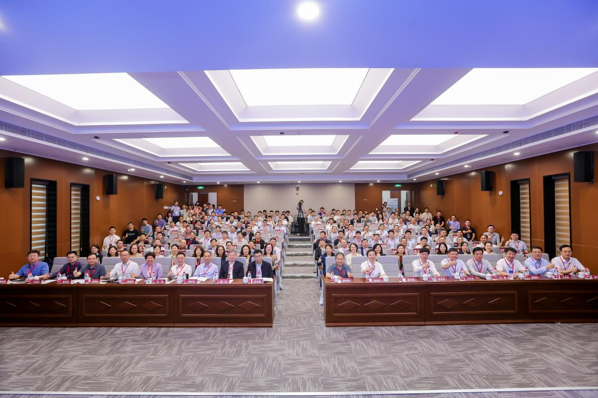

2026年5月17日至19日，第二届“硬质材料基础科学与关键技术”学术研讨会在长沙召开，汇聚了来自全国及港澳高校、科研院所和企业的260余位专家学者。中国科学院院士田永君、陈光、陈延峰及中国工程院院士赵中伟出席，共同探讨硬质材料前沿科学与关键技术。

长沙锐睿科技有限公司作为国内领先的材料智能设计软件企业，面向与会专家展示了包括ICALPHAD、CALTPP、MID-MESO等七款自主研发软件，覆盖相图热力学、微观结构演化、晶体塑性力学等材料研发全链条，实现核心算法自主可控。相关软件已服务华为、中国科学院、西北工业大学等33家企业与科研机构，助力合金设计、性能模拟及高通量研发，并累计支持发表SCI论文70余篇。
研讨会聚焦航空航天、信息通信等领域对高性能硬质材料的战略需求。锐睿科技技术团队展示了在人工智能辅助设计、工艺优化及多尺度性能预测等方向的应用案例，获得专家高度关注与积极反馈。
未来，长沙锐睿科技将继续推动材料智能设计软件发展，服务高端制造与国家科技自立，为硬质材料及高端制造领域创新贡献力量。